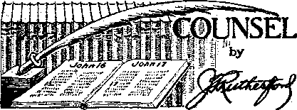
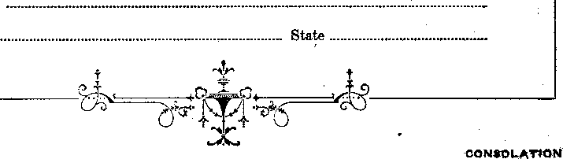

Contents
1
Appetizers
Al) the World Wondering—Ab Foretold (3)
Rltiffing1 the World to a Standstill
Definitely Turning Against Jehovah 9
Witnesses in Action in Dover, N, H.
Monroe County (N.Y.) Penitentiary 16
Counsel by J. F. Rutherford 17
Ku Klux Klan . 18 i
Under the Totalitarian Flag 20
The Hierarchy in the Philippine Islands 22
Hierarchy’s Sympathies with Japan
Blaming It .on the “Villagers”
Money or Barter Under Kingdom Rule?
Published every other Wednesday by
WATCHTOWER BIBLE ANO TRACT SOCIETY, INC.
117 Adams St., Brooklyn, X. Y„ u. 9. A.
Editor Clayton J. Woodworth
Business Minigsr Nathan H. Knorr
Five Cent* a Copy
*1 a year In the United States
>1.85 to Canada and ail other countries
NOTICE TO SUBSCRIBERS
Remlttanosa; For your own safety, remit by postal or express money order. When coin or currency Is lost in the ordinary malls, there Ie no redress. Remittances from countries other than those named below may be mad? to the Brooklyn office, but only by International postal money order.
Receipt of a new or renewal subscription will be acknowledged only when requested, Notice of Expiration Is Sent with the journal one month before subscription expire*. Please renew promptly to avoid loss of copies. Send ohanpe of address direct to us rather than to the post office. Your request should reach us at least two weeks before the date of issue with which it is to take effect. Bend your old as well as the new address. Copies will hot bo forwarded by the post office to your new address unless extra postage fs provided by you.
Published also in Afrikaans, Bohemian, Danish, Dutch, Finnish, French, German, Greek, Hungarian, Japanese, Norwegian, Polish, Portuguese, Spanish, Swedish, Ukrainian; also special Australian edition in English.
OFFICES FOR OTHER COUNTRIES
England 34 Craven Terrace, London, W. 2
Canada 40 Irwin Avenue, Toronto 5, Ontario Australia 7 Beresford Road, Strathfleld, N.S.W. South Africa 623 Boston House, Cape Town
Tint er ad a* second-class matter at Brooklyn, N. Y., under the Act of March 3, 1879.
Hosx
Fiftieth Birthday.
On March 27, Mr. M. Pels, representing the firm of Joseph Weier-mann, will celebrate his fiftieth birthday.
Mr. Pels is well known for his integrity, untiring energy and expert knowledge of the retail shoe trade, and his personal eharm has won him many friends. May we express the . birthday wish that Mr. Pels will remain in our midst for many years to come. (From The Shoe-Market, German trade paper, March 25)
Fiftieth Birthday of M. Pels.
In our issue of March 25 we published a birthday notice about M. Pels, whfeh was sent to us from a source which we believed reliable.
We have been the victims of a hoax. M. Pels is a Jew, and we declare the birthday notice about him to be void. (From The Shoe-Market, April 1) .
E»*y Money
The boss was passing through the packing room when he saw a boy leaning against a box, cheerfully whistling. .
“What is your salary?” he barked at the boy.
“Ten dollars a week, sir,” was the reply.
“Here’s two weeks’ pay. In other words, you’re fired I”
Later, says Stray Stories Magazine, he met the foreman and asked him when they had hired that boy.
"Why, we never had him working here,” was the astonishing answer, “He came over with an .order from another firm.”
i .
Would T*ke It
An actress was incensed by the conduct of the old professional in varying his performance slightly when on the stage.
“That was not rehearsed,” she said. "If you were my husband Pd knock your head off your shoulders for that.”
The old actor looked at her gravely, blandly, steadfastly for a moment- Then he answered:
“Madam, if I were your husband I’d be grateful to merciful Heaven for a sudden end, however dramatie.”
“And in His name shall the nations hope.”—Matthew 12:21, A.R.V.
Volume XX
Brooklyn, N. ¥., Wednesday, July 12, 1939
Number 817
AU the World Wondering—Exactly as Foretold
(In Three Paris—Part 3)
“Aad I saw one of his heads, aS it were wounded to death; and his deadly wound was healed: and all the world wondered after the beast.”—Revelation 13: 3.
GERMANY’S so-called ffhigher powers” are expending $30,000,000 a year in the United States to accomplish here what was accomplished in the' last six years in Germany and Austria. The edicts, as soon as they can he put across, will be in effect as follows:
1. The Constitution of the United States and the Constitutions of the 48 States are hereby repealed.
2. The State and Federal authority, the right to enact laws, the public execution of laws, the entire administration and military command throughout the .United States, and within the forty-eight states and adjacent territories are transferred in full to The Fuehrer of the Volksbund and his designated Commissioners.
3. The Congress of the form er United States of America and the legislative bodies of the fortyeight states are dissolved. Any person participating in tfie work of such an institution henceforth will be punished with death.
4. Dismissed officials may no longer, on pain of death, take any part in public affairs.
5. Every American man and woman between the ages of 16 and 50 is liable to public labor service.
6. Every American man and woman between 18 and 45 years of age is liable to auxiliary public service.
7, Freedom of the press is forthwith abolished. All newspaper undertakings and printing works Will be closed and their equipment seized in behalf of The Bund. Any published statement damaging to The Bund or the American Reich will render its publishers liable to punishment and expropriation.
8. Every organization of employes and employers is dissolved, as is also every party and political organization. Their property is seized.
9. Loek-oute, strikes and expressions of dissatisfaction are punishable by death.
IQ. AU real and negotiable property belonging to dissenters and Jews is liable to seizure.
JUUY 1S, 1939
11. The Fuehrer and his Commissioners will take immediate steps to eliminate all unemployed persons and others liable to endanger the security of the American Reich. These are to be brought, as required, into concentration camps until such time as plans are completed for their disposal. Anyone evading such transportation will be punished with death.
12. All banks, commodity exchanges, and amusement places are closed until further notice. [From *Der Fuehrer Speaks’]
In the preliminary carving up of Czechoslovakia not a particle of attention was paid to justice or truth. In the town of Hodslovice, in 1930, there were 1,943 Czechs and one German, but the Germans took it. The town of Strambul was 90 percent Czech and 10 percent German, but it had a Portland cement and lime works which the Germans wanted, so they took the town over. Koprivnice, at the census of 1930, had 3,968 Czechs and 622 Germans, but it had an automobile works and a wagon factory, so the Germans took it. Trebovice had a big Czech majority, but it had a new power station which the Germans wanted, so they took the town. Svinov also had a large Czech majority, but it is a railroad junction and has a broadcasts ing station, so the Germans took it. The same spirit was ‘shown by Poland. Finally, Hitler completely destroyed Czechoslovakia. '
Relatively few people escaped from Czechoslovakia when one of the prize liars of humanity seized the last of that unhappy country. Among the last to go were 1,000 aviators, who seized as many war planes and made their
3
way into Poland, Rumania, Yugoslavia and Russia. These men also made away with formulas for cement mixture, steel alloys and automatic rifle design which the Germans had expected to get. They also drained oil tanks into the earth and showed in every way their hatred of the fiend that now has the world frightened out of its wits.
Some idea of the terrible plight of refugees from Czechoslovakia seeking refuge in Britain may be gathered from the fact that in some instances, on the last day of March, persons flew back and forth from the Netherlands to Britain five times in a single day and some were so desperate that the pilots refused to take them, fearing that they would jump out en route. Heart-rending scenes were enacted at the railroad stations on the Netherlands-Germany border, where hundreds wrere turned back who did not have British permits.
The merry work of mopping up the last of Protestantism in Central Europe goes steadily forward. Ever since John Huss, rector of the University of Prague, was burned at the stake for condemning some of the unscriptural doctrines and practices of the Roman Catholic Hierarchy, in 1415, there has been a vigorous stand for honesty, truth and liberty in what was recently Czechoslovakia.
Now ail that is passing, being suppressed by the tools of the Papacy operating out of Berlin. The diplomatic correspondent of the Manchester Guardian tells of the shameless methods being used, in the following dispatch;
Under pressure from Berlin the Czechs are compelled' to revise the history of their nation. For example, the Husite tradition, which was deeply imbedded in the Czech national consciousness, is being replaced by a Weneeslaus tradition—Wen-eealaus, the “good king”, being regarded (quite wrongly) as a Germanic Bohemian hero by the Germans, who regard Jan Hus as a purely Czech national hero and leader of an anti-German religious reformation.
This is the more repellant in view of the fact that the King Weneeslaus referred to is designated in history as “Weneeslaus the Worthless” because he was a total loss as a ruler, representing only the Devil, whose servant he was. He died fifteen years before Huss.'
With the seizure of Czechia by. Hitler the infamous Gestapo (secret police) got under way at once and within a few hours had placed 18,000 persons in concentration camps. A hint if. the brutality and severity of the Nazi crowd may be seen in the fact that one woman was arrested for saying that German army uniforms looked sloppy, and a man for making the facetious remark that thez Germans would now improve Prague, as they had improved Berlin, by tearing up the streets. A further hint is afforded by the fact that 150 persons were installed in telephone exchanges, so that they might serve as spies on all conversations . of suspected Czechs. All correspondents agree that hatred of the invaders by the Czechs is ill concealed. A newspaper, A-Z, was suspended for three days for reproducing a photograph of Hitler that did not suit the vanity of the new master of Central Europe.
Wanting to stay free, Iceland refused permission of the German Lufthansa to open air service between Germany and Iceland, but either the granting or the refusal of a German request today is equivalent to an undeclared war with the-Central European monstrosity ;, and the war could have but one result, surrender., Iceland has no army. This is well known to Germany.
For months past a German warship, the Meteor, has been stationed off Iceland measuring depths of the fiords. German soldiers and mariners march through the streets of Reykjavik in military order. A brother of Marshal Goering, of Germany, is making frequent trips between Iceland and Germany, and German “scientists” have crossed and recrossed the island in all directions, measuring plains and heights, and photographing practically the whole surface.
' $ave your tears’ Hitler declares CS/'KWf the churches are receiving over 500,000,000 marks a year from taxation and own landed and forest property worth 10,000,000,000 marks.
The, Register, boilerplate organ of the Roman Catholic Hierarchy in the United. States, in its Central California edition boasts that though the number of Protestant theological students in Germany is decreasing remarkably every year, yet the number of young men studying for the Roman Catholic priesthood shows a remarkable increase. Thus, in recognized seminaries in Germany, excluding Aus- -tria and Czechoslovakia, where there were 4,632 such students in the year 1932-33, there. were over 6,000 in the year 1938-39.
Religionists All O.K. with Hitler
♦ In his speech of January 30, 1939, Hitler showed that it is not the religionists, but only their opposites, the real Christians, that need to fear him, when he said:
They say abroad that we are an anti-religious movement. Against this I declare, firstly, that no one has been persecuted in this country because of their religion, and no one will be.
To be consistent Hitler should have explained that thousands of Jehovah's witnesses in Germany are in concentration camps, and that the only reason is that they love God and are obedient to Him. Like the Lord Jesus Christ, they have no religion: they are merely Christians.
Special Privileges of the Hierarchy
Earth’s greatest'racket
♦ In the Concordat with the Reich various privileges before other members of the people are granted to the Catholic, clergy (exemption of clergymen and students of theology from the universal military service, from acceptance of public offices and the obligations connected therewith that according to canonical law are allegedly inconsistent with ecclesiastical dignity ), and various exclusive rights before other churches are con-cede_d to the Catholic church (diplomatic representation at the government of the Reich, special safeguard for Catholic associations and parochial schools, etc.).—Translated from Das Schwarze Korps (official organ of Hitler’s secret police) of February 17, 1938.
Catholic Church in Germany
♦ . 1932 1935 Iner’se
No: Catholic parishes 11,540 11,702
No. Catholic priests 16,729 17,164
Catholic theology students 4,632 5,277
Clerical order members 10,839 13,360
Catholic nuns 15,000
Attendances in the Catholic churches are larger, both in Berlin and in Munich, than they were before Hitler came into power.
Great Increase in Convents
♦ Commenting on the enormous increase in convents in Germany since Hitler came to power, Das Schwarze Korps, official organ of the German Secret State Police (Gestapo), explained in its issue of September 1, 1938, that, whereas in the years from 1920 to 1932 the number of convents in Germany increased from 6,091 to 7,787, or at the rate of a new cage for the blackbirds every 2.59 days for the thirteen - year period,, yet since the deal between Hitler and the pope put Hitler in supreme control, in but three years, the number increased from 7,787 to 8,651. This is at the rate of a new convent every 1.27 days; and if the statement is even half true it shows what an enormous and useless burden is being piled upon the backs of the German people in the happy days for the Hierarchy when one of their favored sons came into control of what was once a Protestant country. The ideal of the Hierarchy is that every man should be a priest, every woman a nun, and every infant allowed to live a foundling.
Roman Catholic bishops are expected to visit Rome and confer with the pope every four years, but not often er unless something special is in the wind. It is noteworthy, therefore, that eleven German bishops repeatedly visited the pope since the surrender at Munich. Without the least doubt, these are all being tipped off as to how to co-operate with Hitler in the next putsch. ’
Judge Gilbert O. Nations, Ph.D., LL.D,, draws attention in The Monitor to the fact that oh July 22, 1937, “Reverend Father” Mayer, Jesuit, was found guilty of treason
and was sentenced to only six months* imprisonment for what commonly brings the death sentence; and as soon as he had been sentenced the sentence was suspended.
No Persecution of Catholies in Austria ♦ Joseph Bucrckel, plebiscite director on Austria’s union with Germany, explained the accord between the Nazis and the pope in the following statement:
If there are disagreements here and there between the ehureh and the party it does not mean one side or the other is to blame. I am pleased to say that the bishops next Sunday will issue a pastoral letter supporting Fuehrer Adolf Hitler, The United Press cabled from Vidhna that it is not true that there was a general confiscation of Roman Catholic church property in Austria. The basis for the inaccurate report is that the property of the Saint Lamprecht monastery was taken over by the government because the priests, there used the religious funds to support their girl friends. This information was afterwards confirmed by The International News Service,
Just before the seizure of Austria by Hitler there were discoveries of arms in the cellars Of monasteries in Linz, Ai gen, St, Florian and Moedling.
France has thirteen fortified churches and one fortified cathedral, that of Palavas-des-Flots, in the Herault Department, on the Mediterranean.
Everywhere throughout Hungary it was whispered by the Nazis, “After the Congress we are coming,” showing clearly that the so-called "Eucharistic Congress” at Budapest had a political objective. And, sure enough, as sewn as the Congress was over, and the little piece of bread had been worshiped, a vigorous campaign to turn the country Nazi got under way, and is now spreading rapidly.
At an address in Chicago Fritz Kuhn, Nazi leader in the United States,' reported “Reverend Father” Coughlin, of Detroit, as saying, "Adolf Hitler is the only real
Christian leader in the world today.” This statement brought terrific applause from the pleased audience, and looks of “I told you so”, as reported in the Chicago Daily Times. Coughlin could hardly fail to admire Goebbels. He has used Goebbel’s stuff literatim et seriatim as his own. Goebbels is Jesuit-trained. In one of his latest effusions he placed the Fuhrer next to the Creator by saying:
Germany need not be concerned about her future if the Lord Almighty preserves the Fuehrer’s strength and health for many more years.
Silly American newspapers and equally silly press associations continue to publish stories of persecutions of the Roman Hierarchy in Germany. It has not come yet. Karl Kreisler, of Evanston, Illinois, in a letter to the Chicago Tribune dated February 7, 1939, said: 4
I have heard much about religious persecutions in Germany, but I would like to know just where in Germany these so-called persecutions are taking place. I returned from a trip to Europe less than seven weeks ago, and I, being a Catholic and proud of it, was never molested while attending my church in Germany. Many times I have seen Nazis dressed in fujl uniform attending church, and also receiving communion.
It is not as easy to lie to Catholic people aS it used to be: there are so many tens of millions of booklets about, such as Uncovered, Face the Facts, and Fascism or Freedom. Edward Walters, London Catholic, wrote to the London Catholic Herald protesting the lying reports Catholics and others are expected to believe about Catholic conditions in Germany. He said, very truthfully and modestly, "We have yet to hear evidence of anything that approaches persecution in the major sense of the word,” and gave a number of good reasons why the Catholic papers should tell the truth on the subject. He does not realize, poor man, how very much they prefer to lie, thus proving that they are of their father, the Devil, who is a liar and the father of it and of their “church”.
Not without good reason for doing it, the Catholic Herald Citizen of Milwaukee boasts that more’ than half the population of Greater Germany are now Catholies, and next to Italy and France the Nazi realm has more cardinals within its borders than any other nation.
The London Catholic Herald claims that the Roman Catholic Church’s influence on Italians is stronger than it has been in seventy years; also that when Hitler was invited to interfere in the Protestant Church dispute in Germany he excused himself, declaring that he is a Catholic. ■
One of the early evidences that everything in Czechoslovakia was falling into the hands
CONSOLATION
of the Jesuits was afforded in the case of the "Reverend Father” Joseph Tiso, premier of the central portion of the country, called Slovakia. When he planned to throw everything into Hitler’s hands by proclaiming Slovakia’s independence from Czechia (the Fro testant section of the country), his treachery was discovered and he was ordered to go to a Jesuit monastery and remain there until further orders.
The Czechs did not dare to actually im-Jtrison him, for they knew, as appeared from ater developments, that he was working under instructions from Vatican City and Berlin. He was out of his job as premier only five days, when Hitler smashed what was left of Czechoslovakia into smithereens and the desire of the pope to see Protestantism completely crushed in Central Europe was fulfilled'.
Norris Willatt, of London, writes on the same subject, as follows:
Masters of the subtle art of propaganda, the Roman Catholic Hierarchy hfi knows well that one of the best ways til of making a man appear a hero is to ® represent him as following the path of duty when it is contrary to that of inclination.
It is therefore easy to see the hand of that Camorra behind a statement published in the London Daily Telegraph on March 17.
Referring to "Father” Volosin, prime minister of Ruthenia (before Hungary took it over), who, after assisting in the break-up of the Czechoslovak State by agitating for the autonomy of the slice of it governed by him, scuttled to Rumania as soon as his devilish work was done, the writer says;
A simple country priest, he dislikes politics and confesses they are his weak point. His position was thrust upon him against his will by his popularity.
Disregarding the question of whether one who ‘confesses politics are his weak point’ was justified under any circumstances in undertaking the leadership of a state, all Christians who read their Bibles know that Jesus instructed His followers to keep themselves separate from the world.
As a self-styled Christian, however great his popularity (Jesus said His followers would be hated by the world), "Father” Volos in’s duty under the circumstances was perfectly clear. His action shows him (and all political priests, incidentally) up in his true light.
No doubt the Hierarchy would represent it that “Father” Tiso, who obligingly delivered up Slovakia lock, stock and barrel to the totalitarians, as his fellow Jesuit did Ruthenia, was likewise led to accept the premiership of the state against his own inclination “because of his popularity”. One JULY 12, 1839
wonders whether he will be as popular after the Slovaks he betrayed have had a taste of the Nazi medicine. .
As for all those cardinals and priests vdio play leading roles in the subversive activities of “Catholic Action”, without a doubt these would all resign from their posts tomorrow if only they were not so popular! .
Still, no one should be astonished at any lies published by a body whose leader, the pope, in the course of the recent orgy of creature-worship that marked his “coronation”, is reported to have Uttered repeatedly the words, “Lord, I am not worthy.” - ■
Woe unto you hypocrites I
Field Marshal Herman William Goering, upon whom the mantle of German leadership might fall with the death of the present impotent madman, is a morphine addict and was at one time an inmate in the Langbro Asylum in Sweden. When he appealed to the Swedish courts for the guardianship of his first wife’s son by another marriage, it was refused on the ground that he was not a fit person to act as a guardian. Yet he holds the fate of 80,000,000 people in his hands. '
A correspondent drlws attention to a World War news item1 that since 1914 the international Jesuit headquarters have been at San Remo, Italy, and accompanies this information with a clipping from the London Daily Express wherein occurs the interesting information that after spending some time at this resort Field Marshal Goering and his wife and private secretary left suddenly for Berlin. This is merely one of the many straws showing Jesuit interest in the affairs and fate of Germany; for it was on the same evening that the “Reverend Father” Tiso, betrayer of Slovakia, was summoned to Berlin to receive his final instructions as to the part he was to play, and did play, in the complete annihilation of Czechoslovakia, and the very next day Hitler was in Prague. Immediately after the seizures of Czechoslovakia and Memel, Goering returned to San Remo.
D. W. Tomlinson, of the TWA, back from a sojourn in Germany, claims that German
factories are capable of turning out 3,000 to 5,000 airplanes a month. The factories, of which there are many, are self-contained. Many of the workers are hoys of 14 or 15 serving a four-year apprentice course, at the end of which time they become very skillful. The airport at Tempelhof he describes as 4,200 feet long, with buildings six stories high, the tops of which can seat 70,000 people. Nevertheless, Germany has no gasoline. What a bluff!
International Murderers, British and American, supplied Germany and Italy with the gasoline to make possible the destruction of Ethiopia and Spain, and Germany could not fight a big war without the support of these birds of prey.
When Hitler pulls off one of his periodic war scares it is a fine thing for business; also for politicians. Just before he blasted the air with his two-hour-and-seventeen-minute speech to Roosevelt, Germany called out 500,000 men. It was expensive, but it helped business. It was calculated that in April in Europe there were 8,000,000 men under arms or notified to hold themselves ready for an immediate call. Hitler can puff out his chest and claim mueji of the glory of all this; also for causing conscription in England, and providing Roosevelt with an opportunity to keep in the limelight.
The book Mein Kampf, supposed to be the struggle of a poor man’s rise to a position of honor and usefulness to his fellow men, is merely a gangster’s primer, as will be apparent to any thoughtful person from a consideration of the following paragraph, from chapter 27. Jesuitry, the spirit of the Devil, breathes from every line.
A shrewd victor will, whenever it is possible, impose his demands upon the vanquished only in installments. The victor thus gradually weakens the character of the vanquished, making sure that no one demand is sufficient in itself to cause the vanquished to resort to arms in defiance. The more extortions that are accepted, the more unjustifiable violent defense seems to the victims, for no single outrage seems to warrant a struggle after so many outrages have been passed by in silence.
Without striking a blow, Hitler has bullied into submission and absorbed, for all practical purposes, Austria, Czechoslovakia, Hungary, Rumania and Lithuania, and the end is not yet. The surrender of Rumania, pollt-
ieally, economically and militarily, to ‘ the Hitler regime, immediately after the complete shattering of Czechoslovakia, is admitted to be without precedent in modern history. As a result of this so-called “trade agreement”, Germany arms Rumania, develops her natural wealth of oil, wheat, timber and minerals, will furnish her with all her agricultural and other machinery, will receive free ports on the Danube and on the Black sea, will overhaul the Rumanian railway system, and will furnish all the equipment for the Rumanian army, navy and military aviation, without asking any odds of Britain, France or Russia, now being definitely dragged behind the Hitler chariot. -
Explaining why he allowed the German people to pull the pope’s chestnuts out of the fire in Spain, Hitler in his reply to Roosevelt said that he did it—
for the salvation of European civilization; for if the sub-human forces of Bolshevism had proved, victorious in Spain they might easily have spread across the whole of Europe.
This regard for “civilization” on the part of a man that has set the clock of civilization back at least four hundred years by placing Jehovah’s witnesses in concentration camps is a good illustration of the hypocrisy of politicians.
But even that piece of hypocrisy fades when compared with the following words of blasphemy contained in the same address:
I can give vent to my deepest feelings only in the form of humble thanks to Providence who called upon me-—once an unknown soldier of the great war—-to rise and be leader of my dearly loved people. Providence called me to find a way to free our people from its deepest misery without any shedding of blood and lead it upward once more, and Providence has granted that I might fulfill my life’s task—-to raise my German people out of the depths of defeat and liberate it from the bonds of the most infamous dictate of all times. I should have sinned against my call by Providence had 1 failed in my own endeavor to lead my native country and my German people of Ostmark back to the Reich and thus to a community of German people. ■
It is, worth while noting that on Sunday, March 19, 1939, when Hitler returned- from his seizure of all that was left of .Czechoslovakia, all the church bells in Berlin rang with joy that the murderer had accomplished his
purpose. It is also of interest that the much-battered Goebbels was back on his job of propaganda minister, too. .
A wireless dispatch from Berlin states that General Franco, in a personal letter to Adolf Hitler, assured that person that the new Spain, under his control and management, will definitely go along with and support the policies of Germany, Italy and their backers. What else would he do? It is all part of a definite plan to make the whole world totalitarian. Hitler, Mussolini and Franco are all Roman Catholics.
One of the very first to congratulate Pope Pius XII on his election was Adolf Hitler. The very first ambassador Pope Pius XII received was the German ambassador. The German Government was expecting to be represented at the coronation of the new pope, and to view with satisfaction the act of the German and other cardinals kissing Pacelli’s ring, and the German and other bishops kissing his foot. Business is coming along fine.
In a circular to school authorities Nazi education minister, Bernhard Rust, declared that religious education is as much a Nazi service as any other branch of instruction. As a matter of fact 85 percent of the Protestant teachers of Germany still teach religious classes.
Because they proclaim God’s kingdom as the only possible hope of the world most of Jehovah’s witnesses who are alive in Germany are in concentration camps, but a bishop of the Methodist Episcopal Church having jurisdiction in Germany and Austria boasted that his ehureh has no trouble with the Nazi powers. One would think he would be ashamed to make the claim.
The latest news about Pastor Niemoller, ex-U-boat commander, about whom Protestants have had so much to say, is that he is studying Catholic theology. That is the way for; him to get out of prison—just abandon the Scriptures entirely and give himself over wholly to the pet religion of the Devil.
All religionists in Germany are definitely turning against Jehovah God, the great Creator, and against those who stand for the honor of His name, His witnesses in the earth. The accord between Catholicism and Protestantism in Germany is so substantial that nobody thought anything strange of the act of Field Marshal Goering presenting the new village of Fassberg, near Luneburg, with what is called a Simultankirche, i.e., a church Which is to be used by both Catholic and Protestant congregations. There are several such, as in Wetzlar, Altenberg, and Bautzen.
As the head of the council of the German Evangelical Church, Friedrich Werner sent out the following blasphemous prayer, to be prayed in all churches on Hitler’S fiftieth birthday:
Almighty God, we thank Thee that Thou hast permitted our Fuehrer and Reich’s Chancellor to complete in health and strength his fiftieth year. We thank Thee for having sent to our German people through him a change of fortune from slavery and disgrace, misery and degeneration to freedom and honor, prosperity and renewed life.
We pray Thee from our hearts that Thou may-est also in the future keep our Fuehrer in Thy faithful care; preserve him in health and joyous strength and permit him to complete his work as Thou hast hitherto visibly furthered its execution.
Through Thy mercy grant that his whole nation may surround him evermore, that our armies, on land, on the water and in the air, may ever gladly serve him and victoriously protect our Fatherland in the hour of need and danger and that we may all, each in his own place, further his work according to Thy will.
Contrast this with the following from The American Guardian, and decide now where you would rather be, if in Germany: in a concentration camp or in the ranks of the Evangelical “ministry” to the Devil:
The Nazis are all a-jitter over a sect of religionists known as the International Bible Students Association (ealled Jehovah's witnesses in the U. S. and vigilantly prosecuted in many places, particularly where Catholics control political machinery). They are accused by Hitler’s police of becoming a “Red menace”, just as all movements not worshipful of the gangster regime are ealled “Communistic”. What worries German business men and bankers and militarists most is that they cite Biblical verses “to prove” the imminent downfall of Hitler, and that these straws of hope are eagerly grasped by many Germans. They also fear that the organization is furnishing a rallying point for the harassed millions who hate Fascism and fight to overthrow it.
The name of Jehovah, the great Creator, occurs in the Scriptures, alone or in combination with other words, more than 6,000 times. The Bible is Jehovah’s Word, not the word of any man or men. Jesus Christ is claimed by
Him to have been His Son, and Jesus always acknowledged that Jehovah is His Father. Would you think that any would dare speak lightly of Jehovah? Yet the following are headlines of various newspapers, of the dates named (all 1938) :
New York Herald Tribune (Nov. 13) : “Goering to Make Jewry Pay for Rath’s Death by Cession of Fourth of Its Wealth to the Nation. Theaters, Concerts, Are Closed to Them. Victims Must Repair Riot Havoc at Own Expense; Hitler’s Paper Calls It ‘Jehovah's bankruptcy5.”
New York World-Teleyram (Nov. 19) : “Nazis Outlaw Jehovah’s Name.”
Newark, N. J., Ledger (Nov. 19) : “Expulsion of Jehovah.”
Milwaukee Journal (Nov. 19): “Must Erase ‘Jehovah5, Reich’s Churches Told.”
New' York Times (Nov. 20) : “Name of ‘Jehova5 Banned in North Reich Churches.”
New' York Sunday News (Nov. 20) : “Nazis .Censor Bible; Eliminate Jehovah.”
Regina, Sask., Leader Post (Nov. 21) : “God of Israel and Prophets Must Be Erased.”
Washington, D.C., Evening Star (Nov. 19); “Jehovah’s Name Ordered Out of Reich Churches; Erasure Decreed on Threats to Burn Edifices.”
New York Sunday Mirror (Nov. 20) : “Hitler Pushes Drive, Erases Name Jehovah.”
San Francisco Chronicle (Nov. 20): “‘Jehovah’ Banned, Property Seized.”
Richmond, Va., Item (Nov. 25) : “Hitler .Bans Jehovah.”
Boston Sunday Advertiser (Nov. 27) : “Jehovah Banished.”
The world of Noah’s day was destroyed for parallel cause, and the people of Nineveh were mild and justifiable by comparison. This generation is going to Ije destroyed, and deserves it well. It has no thought of love or reverence for the Creator. Millions of them have been taught that He does not exist.
■ ¥
“The reports from the concentration (‘amps confirm and prove the ■HI anguish endured by all interned there. The vile treatment meted out to the prisoners continues to this day. Here are some of the forms that treatment takes: blows with cudgels and beatings with horsewhips; ends of the fingers crushed in a linen-drying inaeliine; women
10
and children fleeing in order to escape being taken as hostages for the menfolk, the object being to overcome the resistance of the latter by ill-treatment of the former; women and girls struck heavy blow's with a stick on the hinder parts ; torture post bristling with nails; and finally murder itself. The family of a murdered man ar e not- even allowed to say a prayer at the graveside of their beloved dead on the daj' of the funeral. The subordinate officials lay the blame for these atrocities on the authorities, who are conversant with everything that goes on.
“The same infamous acts are committed in the territory of Danzig. Those who refuse to give the Hitler salute in the so-called ‘Free State’ are dismissed from their work and persecuted. The officials of that state, controlled by the League of Nations, even go to the length of giving up the Danzig Bible Students (Jehovah’s witnesses) to the German authorities. Protests addressed to the League are useless. Europe closes its eyes and shuts its ears. It is a shame that the good name of Switzerland should be compromised by one of its citizens, the present commissioner of the League of Nations.
“Crusade Against Christianity is addressed to men of good will. The author evidently thinks that some still remain. But ought not the very stones themselves to cry out against these iniquities? ’
“In Switzerland Jehovah’s witnesses have been refused permission to give public lectures intended to expose the crusade of the Sw'astika against Christianity. The pretext advanced for this refusal is the Hitler fable that they are Communists.
“Is Roman Catholicism envious of Jehovah’s witnesses? Possibly so, because of their heroic martyrs. Certainly it hates these ‘heretical laymen’ who venture to -explain the Bible without Papal authority.
“The author of this recent publication dispenses with all Scriptural explanations. He ought to be a glad man and to esteem it an honor to have thus pleaded the cause of those Christians who suffer persecution and death for their faith and in defense of the cause of righteousness. If statesmen and politicians had but even a small portion of the courage that imbues Jehovah’s witnesses the numerous crimes perpetrated by the present demons in office would have been impossible.”—From the French Consolation of October, 1938. ■
OQNSOLAT1QN
SUGAR is a comparatively modern commodity. For thousands of years honey was the only sweetening substance known. A hundred years ago sugar was such an expensive article that the average person consumed about ten pounds per annum, as against ten times that amount today.
Most authorities agree that sugar-making originated in India and other parts of the Orient. The modern word sugar comes from the Sanscrit “chakara”, similar to the Persian “shakar”. No doubt the Crusaders of the Middle Ages brought back supplies of sugar with them and thus started the trade in that commodity between the West and the East. The royal palaces at Madrid and Toledo were built with the profits of the sugar trade.
At that time sugar was used chiefly as a medicine, and so valuable was it that explorations were made in various parts of the world to find new sources of supply. It is said that Christopher Columbus had the discovery of sugar as one of his objectives when he started his memorable journey, across the Atlantic. With the advent of tea and coffee, however, sugar began to be used for sweetening purposes generally and became more or less one pf life’s necessities.
Until the time of Napoleon the sugar cane was the source of the sugar supplies of the ■world. The wars in Europe caused France to be cut off from her supplies, and so scientists began to seek some other means of manufacturing the article. Apples, pears, plums, and even walnuts and chestnuts, were tried, but with little success. The first factory for the manufacture of sugar from the beet was erected by a German chemist in the year 1802. The French soon learned of this, and less than ten years later a Frenchman, Benjamin Delessert, produced some well-crystallized beet sugar. As soon as the news reached the ears of Napoleon, he dropped all other business and rushed off to the sugar factory, where, in his delight, he pinned the Cross of the Legion of Honor, which he had been wearing, onto the breast of the astonished chemist. For some time sugar made from beets was not popular, but the public soon began to realize that sugar was sugar, from whatever source it was produced, and since that time the sugar beet has been g serious rival of the sugar cane.
JULY 1S,
Sugar cannot be produced artificially. Carbon, hydrogen and oxygen are combined in sugar, but just how, nobody has been able to discover. Chemists say that sunshine is necessary in the combination of these three elements, and sunshine is something which the scientists of today have not as yet been able to manufacture.
Among the products of the sugar cane is molasses, or black treacle as it is known in England. This is said to be an excellent remedy for constipation, although too much is liable to have a bad effect on the heart and also on the delicate lining of the stomach. This may not be noticed for some years, however. Other by-products are blackstrap, or inedible molasses, used largely in manufacture of cattle feed, industrial alcohol and yeast. Insulating wallboards are made from the ground cane, reduced to pulp. The pulp is also used for fuel.
Sugar is also used in the sweetening of tobacco, and the manufacture of soap and high explosives, while housewives know the part it plays in canning and preserving as well as in baking and confectionery.—J. A. Williams.
♦ The butter yellow dye, used to give a nice color to that mysterious and questionable compound called “oleomargarine”, causes Skin disease when a strap colored with it is worn next to the wrist. Maybe you are more particular in what you have pn the outside of your wrist than in what you have on the inside of your stomach. Encourage your undertaker by eating oleo dyed yellow.
♦ In the new method of cleaning turkeys the larger tail and wing feathers are removed by hand. Then the bird is dried and dipped in wax. Then it is sprayed with cold water to harden the wax. Then the wax is removed and with it come all the rest of the feathers. The wax is recovered centrifugally.
♦ Fuzzless peaches do not grow that way, but are made that way by a high-speed defurring machine which revolves them against brushes with just enough pressure to mdse them more attractive and palatable.
11
♦ A witness here who came out of fleshly Israel told mo recently that after attending the Memorial he reached home to find, that his wife and relatives were just winding up the Passover service there. The conclusion of that service is a priestly imposition, as follows: A goblet of wine is placed on the table and the outside door is opened. He arrived just after the door had been opened, and because every one was in the next room, when they heard him enter they called out, “Who is there?” Being a wit he answered, “The angel of death.” Being utterly superstitious concerning death they got hysterical, that is, the females did. Then he said, “What is this? Why do you put the wine on the table and open the door?” They answered, “That is to let the Gentiles know that we are not drinking the blood of a Gentile baby.”
Herman said, “Is not this an abomination to Jehovah, that you should show fear of men? If Jehovah is really your God and you trust Him, what should you care what the Gentiles think? How do you think that Jehovah could have His name declared in all the earth if you never mention it?”—Contributed.
♦ Everybody at Vinco, Pennsylvania, is learning things. Loyalty booklets were put in every home. The five members of the school board did not know of the decision of Federal Judge Maris that children cannot he compelled to salute the flag, and when they learned it they were mad; they said, Federal decision or no Federal decision, they had given instructions to the teachers to liek all the children each morning until they salute; also all Jehovah’s witnesses ought to be murdered, to the accompaniment of profanity. Then the teachers were visited, and being used to using their brains (differing from the school board in this respect), they decided there would be no more flag saluting for those who did not wash to do it, and the result was that nearly one-half refused to salute any more. The citizens are learning, the school aboard is learning, the teachers are learning, the children are learning, and before you know it Vinco is going to be a fairly nice place to live.
♦ Some people say the spreading of the message of God’s kingdom is a money-making scheme. Very well! Jehovah’s people put in approximately 13,905,000 hours a year in the service, counting time coming and going. Rate their time as worth 50 cents an hour: the value would be $6,952,500. Allow one gallon of gas a day for each worker and there would be another $1,800,000 ; total outlay, $8,752,500. Total received for books and booklets, not counting one cent for paper, covers, printing, binding or transportation from factory to worker, $1,060,683.15. How rich would you feel, reader, if you were engaged in an enterprise in which you annually made $1,060,683.15 (assuming that your books cost nothing whatever) and lost $7,691,816.85 ? And what would you think of a nut that would think you were making millions out of what you were doing, even when you offered to give him literature for nothing, provided he would promise to read it?—C. O. Shoemaker, Washington.
♦ The Reading (Pa.?) Graphic, reporting interference with the work of one of Jehovah’s witnesses in proclaiming the Kingdom as the hope of the world, mentioned that the young woman in question was ordered to stop and proceed to the city hall for a permit, and put the whole story under the startling but pointed headline, “Even God must have a permit,” thus going direct to the absurdity at the heart of the whole matter. Here and there is still an honest and courageous and caustic spokesman for the public.
♦ At Lykens, Pennsylvania, where one of Jehovah’s witnesses was arrested for proclaiming the good news of God’s kingdom, an odd thing happened recently. The “Reverend” H. B. Rittenhouse had just completed his sermon on the text, “He shall baptize thee with Are,” when his church, the Transfiguration Baptist, eaught fire and burned to the ground. On the next evening the local firejnen were to have attended in a body a meeting especially intended for them. '
Mr. Robert F. Graham, 825-C Bath St., ■
Santa Barbara, Calif.
Sir: .
This is in reply to your letter of April 6. I note that you run quite true to form. You use the very distinctive Roman Catholic method of answering arguments. You do not set forth any facts or answering allegations, but resort to abuse by saying that my letter is "the ravings of a depraved mind” and that it is "a libelous insult to the Catholic religion” and that I "must have at some time suffered a severe head injury”.
ploy sort, facts ter.
It’s very easy to call names and to emabuse of that but to present is another mat-Catholie newspapers, periodicals and books use the same method. Not one of them comes forth with any facts to an" swer the allegations and statements which have been made against that church.
Judge Rutherford has published and eir-
eulated many books in many languages, from one part of the country to the other, in which facts proving fraudulent practices of the Catholic Church have been set forth. No attempt has been made to answer them, but there has- been a great torrent of vilification and abuse poured out upon him. It seems that you use the same method ■ and apparently it comes from the head of the Catholic organization/ ' ••• •
We can give you plenty of proof, but from the tone of your letter I do not think proof would mean anything to you. The fact that two,thousand Christian people have been arrested in this country at the instigation of the Catholic clergy is one line of proof. How many Catholics have been arrested in the JUL.V 12; 1939
United States for preaching the gospel? Not one. But two thousand of Jehovah’s witnesses have been arrested for that so-called "offense” at the instance of Catholic clergy.
Furthermore, with reference to the submission of proof, I would like to ask you a question. Do you deny the fifteen points set out in my letter as to the relation between
Fascism and Roman Catholicism? Do you deny that the pope recognizes and supports Franco and did support him through all of his murderous attacks upon children and others in Spain? Do you deny that the pope has diplomatic relations with dictators, including Hitler and Mussolini ? Do you deny that Father Coughlin’s activities e are Fascist? Do you deny that the Catholic Church is the main support of totalitarianism in Quebec? Do you deny that the Catholic organization supports Mayor Hague in his totalitarian rule in Jersey City?
If you honestly think those allegations are not true,
Boorstep method of witnessing please say so, and we
wiUjgive you some proof.
In addition to those allegations, in my letter to President Roosevelt I submitted nine specific instances where the Catholics have infringed upon freedom of speech, freedom of the press and freedom of assembly. Do you deny that those statements are true? Please answer.
In my letter to the president I also stated that the Roman Catholic Hierarchy carries on a racket by frightening people into -paying large sums of money for protection and re- ■■■ lease from a mythical place of future punishment labeled “purgatory”. Do you deny that Catholics pay money to priests for release from “purgatory”? Do you claim that there is any such place as “purgatory”? Can you give any proof in support of it?
We can furnish plenty of proof that the ‘■purgatory” racket is conducted by Catholic priests for financial reasons only. If your mind is open to any degree at all we can give you the evidence and the proof.
If you want to discuss these matters on the basis of reason and evidence, I shall be glad to go into them with you further. But if your only method is to resort to the calling of names and insinuating that any person who criticizes the Catholic church is unbalanced mentally, then, of course, there is no further need for' discussion. I would like to hear from you further.
Yours very truly, Olin R. Moyle.
husband posed it cause of first. At
*1 Down in old Virginny*1
came violent, burned , - -
her books time and " ^mety-eight years young, and eager to hear and read ner books rime ana &boijt God,a kin„dom
again, and a year or
♦ Special pioneers called the other day on a Baptist preacher’s wife in Birmingham who has loved the truth for a quarter of a century. Her bitterly op-and her belt, from the times he be-so ago went so far as to break her arm. Members of his church took his wife’s part and he apologized before the deacons. His son protected his mother at the time of the assault, and the neighbors encouraged him to do so, protesting that his mother is a good wAan, as indeed she is.
The husband endeavored to force his wife to leave her home, but she does her part in making and keeping it, and the Domestic Relations Court has instructed her to stay right where she is, and report to them if her husband further molests her. However, he does all possible to keep her from getting out in the work which is so dear to her heart. Also, as the head of the home, he compels his son, still a minor, to attend his church. Through it all the wife remains true and faithful to the Lord, receives many rich blessings at His hands and knows that the time of the great deliverance draws on apace.—Ola D. Richardson, Alabama. ’
After caretaker Brooks had given us assurance Saturday morning that the arrangement made two weeks previous still stood good for renting the Grange Hall for that night and all day Sunday, and an advertisement of the Sunday public meeting there was inserted in the Dover Democrat, the Grangers hall committee, George Kay, chairman, sent notice that due to complaints they must deny Jehovah’s witnesses the hall, and locked the doors.
Sunday morning our regional servant and zone servant together called at Kay’s home, who claimed he was not at liberty to tell who or what was back of this interference with our use of Grange Hall, He and committeeman Morrison pretended ignorance of Brooks’ arrangement (even that Jehovah’s witnesses had met in their hall before), and disavowed all Catholic instigation. No Catholic Action, eh? Well, note what followed:
Immediately after Kay’s unfair action, by scurrying around other halls were hired, (1) the G.A.R. hall in Dover for the 7 o’clock meeting that night of the local and out-of-town servants of companies and for the Sunday night lecture on “Fascism or Freedom”; and (2) the Eagles hall in Somersworth, five miles distant, for the zone-assembly meetings Sunday forenoon and afternoon. About 6 p.m. Saturday the out-of-town witnesses began arriving at Grange Hall, so an information march was organized. For an hour they marched, seventeen of them, using the signs advertising Grange. Hall. Some soft vegetables were thrown at them by anonymous Actionists. Also our Saturday newspaper advertisement, parallel with a religious church advertisement, on the front page, announced our public meeting as at Grange Hall. Thousands of the handbill announcements, with the Grange Hall address, were distributed both Saturday and Sunday. - ..
i, i
Sunday noon another information march, with nineteen marchers, braved the “Palm Sunday” winds, rain and snow slush, still using Grange Hall announcement signs. No word of any change of hall was given, lest Catholic Action again get busy and break up our new arrangements. Toward 4 o’clock that afternoon a thick, heavy snowfall set in, and it looked like a black-out for the 7 p.m. public lecture. Only 28 of the witnesses were able to remain in Dover to assist. As soon as possible the majority of these went over and took possession of the G.A.R. hall, forestalling any surprise enemy action to have the doors locked in oiir face, with us on the outside. They would now’ have to eviet us. Witnesses were stationed at the locked Grange Hall to redirect all strangers to the new hall. A large notice read; “Grange Hall canceled. Inquire here for information concerning new hall,”
Eejsult of a back-call at Shepherd, Mich.—20 Jonadabs
Twenty minutes to 7 p.m. an enemy sign parade marched to Grange Hall, to picket the place and scare away the public. The youths carried signs (on backs of movie picture display cards) in poor lettering; “Follow God and Be Happy”; “Don’t Get Hooked”; “Religious Fanatics Be Careful”; “Hail Americanism”; “Religion for America and Americans”; "Don't Go In ; “Hail God and Country”; “Hitler, Mussolini and Judge Rutherford Maybe ?”; “They Are Traitors to Our Flag”; “Be a Patriot Stay Out.” They began shouting for information, trying to involve the witnesses there in strife. “Why are you against us?” they demanded. (Who’s “us”?) The fimely appearance of police patrolman Allen (not Catholic) cut short an attempt at violence. One significant thing they said was; “Just wait until you have your convention in New York in June.” (How did they find that out?)
Finally learning with chagrin that we had gotten a new hall, cursing they stomped over there and climbed up to G.A.R. Hall, and acted riotously. Police Officer Allen was called to intervene, and forced them to quiet down. Several times they remarked about what JU UY W, 1»3» would happen in New York in June, Only twenty minutes late the meeting opened, the lecture proceeded (two phonographs being used, thus safeguarding a costlier transcription machine), and the audience of 71 listened. Fearing under police surveillance to carry further their vicious designs, the sign-bearing rowdies could stand no more of the heat of the lecture and went out, leaving behind their signs on the floor—and eggs too! in the hallway and on the stairs. As the ringleader Turgeon (a French Catholic) passed Police Officer Allen he sarcastically remarked: “Thanks for all your assistance!” (which they had not got. They were deliberately sent there by the priest, without a doubt.)
Despite all this the meeting was a grand success. All chairs w’ere filled, some people were standing, and if the weather had been even fair we could never have taken care of the people in the G.A.R. hall. After the gangsters left, 16 when Part 2 of the lecture began, and 5 more after Part 6, there were 50 that heard the speech all through. Of these, 22 showed remarkable interest and asked where we met regularly. Witnesses took some home, and others left their names. Booklets (24) and one Bible were placed, and several persons lingered around till after 9 p.m. because of interest.
Various business places, including Diamond’s barber shop, and several other places, which people are interested and were seen in the meeting hall, have been denounced by the priest Rene Gonstanti, who wrote in to the Society for those twrn free booklets. He told people that they would no longer be served communion in the church, and threatened these other places of business wfith boycott.
What ? No Catholic Action behind that Grange Hall shutout? Wake up, Grange Hall committeemen Kay and Morrison and Cobb, if you are “Protestants” and Americans! —F, W. Franz, Bethel.
(The threats against the public meeting in New York in June above recorded are plain evidence of conspiracy.—Nd.] .
Jehovah’s Kingdom publishers at Elkader, Iowa
An. information mareh at Mounds, Ill.
Monroe County (N. Y.) Penitentiary ♦ During the summer months of 1937, we asked the officials of the Monroe County Penitentiary if they would like to have us set up educational programs for the prisoners, which programs have to do with the establishment * of God’s kingdom on earth. The warden thought it a good idea to help the prisoners and inmates and consented. He invited us to eome on the following Sunday morning, because it was the free Sunday of the month, the other Sundays being engaged by the Catholic priest and the Protestant minister. We were to have one-hour programs.
The following Sunday the sound-ear was driven into the prison yard and the prisoners were marched out of their cells and made to sit on the grass surrounding the car. First we put on a musical record. This aroused the interest of inmates, guards and all others. Then followed the lecture records, Judge Rutherford speaking. At the end all looked at the car in wonder and amazement. We had been told not to have any kind of discussion; therefore we announced free booklets for those who desired them. Ninety-four were left with guards and prisoners. ,
The warden thought this very good and invited the ear to come one Sunday per month with similar programs. Each month the car visited: the penitentiary it was received with shouts of joy by tire men. Each time we left booklets with those who desired them. This kept on for five or six months, when one Sunday we were told that we must discontinue our programs. Asking the reason, we were told that “Reverend” Eng. Golding and “Reverend Father” William Hol lock were in charge of the religious affairs there- and that they had ordered the programs stopped without giving any reason therefor.
The warden seemed a changed man, evidently fearing that he might lose his political job. A few months later we learned that all the booklets left with the guards and inmates had been gathered and burned, and a drastic order had been issued that whoever failed to surrender any Watchtower literature in his possession would be confined in solitary confinement on bread and water for one week. About 500 booklets were thus seized and destroyed.—-A. Mulley, New York.
♦ Feeling the pinch of the truth, “Reverend Father” Peter M. H. Wynhoven, whose illegal and subversive acts in the State of Louisiana have from time to time been notified in these columns, makes the squawk in The Catholic Digest that The Watchtower and this publication combined have a larger circulation than all the Catholic weeklies put together.
♦ One day recently, while in the service, I came across a boy by the name of John Doyle, about ten years of age, selling chances for the priest of his church. The winners were supposed to win a statue of “St. John the Divine”. He asked ine if I wanted to buy a chance from him. I told him No, because I would throw the statue out if I won it, anyway. John started to laugh and said, “Well, seeing as. you will not buy a chance, I might as well tell you. I get fifty cents per book of ehanees, and when I sell a whole book I turn the money over to the priest and throw the addresses away. The people don’t know it, but they do not win anyway, because the priest gets all the money. Then the priest raffles off the statue to us kids.”—Paul Sherwood, New York.
(To be continued')
' CONSOLATION
THE public press of the Roman Catholic Hierarchy repeatedly charges that Jehovah's witnesses are carrying forward a campaign of hate against Catholics and against all others w’ho are religionists. That charge is without foundation in truth. Hate means to have and to manifest aversion against a person or thing. Jehovah’s witnesses are Christians, and they do not hate any person because he is a Catholic, nor do they hate anyone because he is a Jew or a Protestant or because of his race or color. A sane person, who serves God, does not hate another person because that person is suffering from a deadly disease. Oh the contrary, he has pity for the person so suffering. He does hate the loathsome disease and would be glad to relieve the suffering person therefrom. Religion is a deadly disease because it is the invention of Satan, is the enemy of man, and leads men into certain and complete destruction. Because a person is under religious influence is no cause to hate that person, but rather a reason to have pity on that person, with a keen desire to relieve him from religious delusions and help him to see the truth. Jehovah’s witnesses hate that whieh is false and try to help the people to see the truth. But they dp not hate the persons who are laboring under the delusion of falsehoods. . .
Jehovah God and Christ Jesus hate hypocrisy, Religion is hypocritical and - produces hypocrites. Therefore God and Christ hate religion. (Proverbs 6:16; Matthew 15:1-9) Those who serve God are instructed in these words: “These are the things that ye shall do: Speak ye every man the truth to his neighbour; execute the judgment of truth and peace in your gates; and let none of you imagine evil in your hearts against his neighbour > and ' love no false oath; for ail these are things that I hate, saith the Lord.”—Zechariah '• 8:16,17.
The Catholic religion defames the name of the Almighty God Jehovah in many things,
JULY 12, 1BM such as the doctrines of “purgatory”, “eternal torment," of the “infallibility of the pope”, and the ‘power of men to hear and give absolution for sins’. It is the duty of all who love God to tell the truth; and the truth fully exposes the falsity of religion, and particularly that of the Roman Catholic Hierarchy. Because men practice such a false religion is no excuse or justification to hate the individuals. No doubt most of the Catholics known as the “Catholic population” have been overreached by the adversary and hold to their religious belief because they do not know anything better. It is the duty of Christians to point out to all who will hear the truth that Jehovah is the only true God, and to Him alone belongs salvation. (Psalm 3:8) Christians must tell others that God has provided salvation through Christ Jesus and that there is no other means of obtaining salvation. (Acts 4:12; Romans 6: 23) They must declare that the wages of sin is death and that the doctrines of “purgatory” and “torment” are inventions of the Devil, brought into action to defame God’s name and turn the people away from the Most High. They must inform the people that God, through Christ Jesus, forgives sins, and that no man, whether he is a priest or not, has any authority or power to receive confessions, forgive sins, or to relieve men from their sins. (1 John 1:9; Ephesians 1:7) The Roman Catholic Hierarchy teaches that the pope is a successor of Peter and that Peter is the foundation of God’s church. Such a doctrine is a defamation of God’s name because Christ Jesus is the foundation Stone, upon whom God builds His church, and there is none other. The Hierarchy teaches the people that the Roman Catholic organization should have a controlling voice in the political affairs of the world, and therefore should indulge in politics, all of which is contrary to the proper course of a Christian.—James 4:4.
Jehovah’s witnesses, in obedience to God’s command, declare the truth as the truth is set forth in the Bible; and this they do in order that good may be done to others. The Roman Catholic Hierarchy have ever tried to keep the people in ignorance of what is contained in the Bible, and when the truth is told to the people the Hierarchy become angry and resort to vicious slander and other wicked action against Jehovah’s witnesses. The Hierarchy are the ones who manifest hate toward individuals who are the witnesses of the Almighty God. -
17
Jehovah’s witnesses follow the rule laid down in the Scriptures which says: “As we have therefore opportunity, let us do good unto all men, especially unto them who are of the household of faith.” (Galatians 6:10) A witness for Jehovah would do no harm to any person because that person holds to any certain belief or practice in form of religion. By pointing out to that person the truth, as set forth in the Word of God, good is rendered unto that person, whether he is a Catholic, a Protestant, or of no religion whatsoever. Satan is the enemy of all men, and especially of those who desire to do right, and his policy is to withhold the truth from the people; and therefore the peoples of earth are in bondage to the Devil. The truth opens the way to freedom and to life; and therefore those who tell others of the truth of God’s Word are doing them good and pointing them to the way of deliverance and life.—John 8:32.
AT THE jamboree in Atlanta when Hiram W. Evans, imperial wizard of the gangster organization known as the Ku Klux Klan, was special guest of the Roman Catholic Hierarchy, on the occasion of-the dedication of a cathedral on what had been the site of Ku Klux Klan headquarters, “Right Reverend” Gerald O’Hara, bishop of the diocese, made the prophecy that he was sure much good would come of it. And if it would not be a good thing for two gangsters to get together, what would $ Of course, it would not be good for the public, but it would be good for the gangstersl One hand could be used to wash another; and that is what O’Hara meant.
Miami’s anarchists, childishly covering their heads with hoods so that nobody could see their cowardly features, rode through the Colored section of Miami with the license plates of their automobiles covered, in violation of the law, and set up and burned more than 25 of their helplessly idiotic fiery crosses, all with the intention of preventing Colored citizens from voting. The next day a full thousand of the Negroes voted, and, to the credit of Miami’s police, none of whom could be found when the crosses were burning, they were protected in their rights. Seven pictures of the Ku Klux anarchists in the Miami Herald, showing the hangman’s noose and other features representing their contempt of the law, made the Negroes determined to exercise their rights, so that the Kluxers really defeated their own cowardly objectives.
On a Monday night, 66 automobiles were driven in Miami with their license plates covered, in violation of the state and city laws. They were driven through red lights, in viola* tion of the law. They parked on city-owned property without a permit, and illegally denied others that privilege. They appointed one of their own number a traffic eop. One of .their cars sideswiped another car, but did not stop. There were no arrests. They were members of the illegal, un-American organization the Ku Klux Klan, one of the principal tools of the Boman Catholic Hierarchy in Dixieland.
♦ Seemingly never having learned of the Civil War of 1861-1865, or what it was all about, Joseph Shelly Decker, Mississippi planter, got a three-year prison sentence for chaining Ethel Davis to a bed at night and working her in the fields by day, to pay off/ a debt owed by her common-law husband J. W. Wiggins. Wiggins was also chained for a time, but made his escape, brought the sheriff to the place, and when he arrived the sheriff found the woirtan in chains. Decker admitted the charges, which could not be denied, but said he was still minus the $175 he had expected the couple to work out.
♦ By a vote of 151 to 130 the General Assembly of the Presbyterian Church in the United States of America, meeting at Meridian, Mississippi, decided to omit the following sections from the church code, thus showing their disposition to give God a chance (which is right funny when you come to think of it) :
By the decree of God, for the manifestation of His glory, some men and angels are predestined unto everlasting life and others foreordained to everlasting death. And their number is so certain and definite that it ean not be either inereased-or diminished. ' -
CONSOLATION
♦ A survey of 500 representative ministers in the Baptist, Congregational, Episcopal, Evangelical, Lutheran and Methodist churches showed that 48 percent did not believe the Scriptural account of creation, 38 percent do not believe in special revelation, 28 percent reject prophecy, 55 percent hold that the Bible contains myths and legends, 19 percent do not believe in the virgin birth of Christ, 24 percent do not believe in the atonement, and 27 percent do not believe in the second advent of the Lord. These figures were supplied by Reverend Er. Clarence E. Macartney, former moderator of the Presbyterian church in the United States.
♦ The girls are often bothered to know what they shall wear. Not sure if this information will be of any value, but it ought to help some. It is taken from a church paper styled Trinity Church Advent Bulletin:
Strange reasoning at
llosciinle, Pennsylvania
The stole is the narrow, colored band, usually silk, worn over the shoulders of the clergy, and pendent on each side nearly to the floor. It is properly worn during the holy communion, and commonly worn during the other services. The colors change with the season. The tippet is a black band worn as a stole, but wider than the latter. It is used on occasions which do not require a stole. The cincture is a girdle worn round the waist outside the cassock. The hood is the ornamental fold of silk, usually brightly colored, hanging from the shoulders down the back of the priest.
♦ Al armed because the Creator himself stated that His personal name is Jehovah, a group in Los Angeles advertised in the church notices their opposition to dropping TTis name from the Bible and wished the readers of the papers to vote on this question, and also to state whether they believe “Jehovah” is f u n c t i o n i n g today. What a strange notion, and. when one comes to think of it, how supremely impudent, that, any person should presume to vote on the status.of the One who holds the earth in tin* palm of B is hand, and to whom even the stars of heaven are a very little thing. The fact is that this generation has gone nuts and does not even realize any more how absolutely foolish it is in the eyes of God.
♦ The more religion, the less Christianity. Cautiously, so as not to attract too much unfavorable attention, though eager to get just enough of the right attention, the Newtown Presbyterian church has done what it could to make its interior look like a Roman Catholic, church. The communion table now occupies the place usually occupied by an altar, is called an altar, has a cross at least- two feet high on it, and the church is open daily for “prayer”—-which Jesus said should be done in the privacy of one’s own closet, with the door shut. But of what avail to quote Jesus to modern-day religious racketeers? They heed Him not.
Basing their ideas on a miseon-WwJrS ception of the meaning of the word love, some who profess to have yr J a eome a knowledge of Jehovah’s * r ' purposes maintain that Satan, the archrebel, will be ultimately forgiven and brought into harmony with God. This teaching is one of the main doctrines taught by a sect who actually worship “Shaitan”, or Satan, although they never mention his name, such is their great reverence for him. They call him “Melek Taus”, or the Peacock Angel. There can be no doubt in the minds of the majority of the readers of Consolation as to the whereabouts of the chief representatives on this earth of the prince of darkness, although such representatives do not acknowledge the one they serve. There is, however, a priesthood openly claiming to serve the Devil and priding themselves in the possession of the “holy" (unholy) plate where he can be worshiped. The place is the shrine of the Shaikh Adi, and the people who are the acknowledged worshipers of Satan are the Yezidis of Iraq.
Shaikh Adi is claimed as the founder of this sect and is said by some to have been a Magian. Others maintain that he was a Christian (?) bishop who lies buried on the spot where the temple now stands, and that he died before the Yezidi faith started. Knowing something of bishops, past and present, who claim or have claimed to be Christian, it is not difficult to believe that one was responsible for the foundation of the sect in question.
The religion itself is, like another and better-known brand, a mixture of several religions. Among other things, the Yezidis believe that Satan was expelled from heaven for a few thousand years only, and given power on earth during the time of his expulsion, and that later he is to be elevated to the position of highest favor; and that, of course, explains the Yezi-dis’ religion. Like other religions, it exploits the selfish instincts and desires of its devotees.
Just as the clergy of the Roman Catholic “church" claim that the “sufferiiigs of purgatory” can be alleviated for a consideration, so the priests of the Yezidis teach that, by placating Satan with gifts of money and jewelry now, his worshipers will be in his good hooka when Satan is restored to favor.
Another similarity in the religion of the Yezidis and the Roman Catholic brand is seen in the fact that the reading of two books, carefully hidden and said to contain the creed of the worshipers of Satan," is unlawful except . for the priests. For this reason it is difficult to obtain correct information regarding them.
The high priests of this religion are also like their -counterparts in the Roman Catholic . brand during the Dark Ages (for which they, of course, were responsible) ; for the seven predecessors to the present Mir, as the high priest is called, were murdered by their successors.
Health and fortune are assured (?), not by kissing somebody’s big toe, but by kissing a brass peacock, after a sum satisfying to the attendants, known as Qowwals, has been handed .over. There are said to be two of these birds, one on the east side of the Tigris and the other on the west. According to the Yezidis, when the eastern bird crosses the river the world will come to an end. z
Another method of making contributions is to throw the offering down a crevice in the Sinjar mountains. Some years ago, a Yezidi, probably starting to think for himself, attached some sticky pitch to a long piece of rope and, letting this-down the crevice, was able to enjoy some lucrative fishing. Lucky in his first attempt, he decided to repeat the process, but his neighbors began to remark his greatly improved circumstances. His movements were watched, and when he was discovered fishing in the “sacred” crevice, there was but one remedy. Satan had to be avenged, and so the unfortunate angler was stoned to death.
In the eyes of “civilized” religionists, the practices of these people must seem an abomination, as they are. But the practices of religion are just as great an abomination in the , eyes of those who have eome to a knowledge of what the Bible really teaches. What is more important, religion of every brand is an abomination in the eyes of Jehovah. It is, in fact, devil worship, under whatever name it appears. It must rejoice the hearts of all lovers of righteousness that this abomination is soon to be destroyed.—J. A. Williams, Lithuania.
You state in your letter you want me to collect money for you from all the people I can and then send it to you, and you will try to repay me by praying for me. I’m sorry,
Agnes, but I cannot do this, because it is , against God and Christ to support the organization you represent. In fact, the Bible shows , that Jehovah God, through Christ Jesus, will soon destroy all religion, and mainly the Roman Catholic organization, which is the most wicked of them all. You say you are sure God will bless me and my family for whatever I dp for you and your organization. God has blessed me and my family already by giving me an understanding of this great truth, that the Roman Catholic Hierarchy is the Devil’s organization and He will destroy it soon at Armageddon.
You say that your mission is engaged in converting souls and baptizing them into Christians, and you did this to more than eighty of them on Christmas Eve. First of ail, the Bible shows that there is a distinct difference between a Christian and a religionist and that before one can become a Christian he must abandon religion, because it is from the wicked one the Devil. The apostle Paul did this very thing. He was a religionist before he became a Christian. Second, God did not commission anyone to do any converting, but the Roman Catholic Hierarchy is only converting them as prisoners to support their own wicked, selfish organization. Third, even Christmas is not Scriptural. Christ was not . born on the 25th of December; and nowhere in the Bible is it mentioned that we should ever -celebrate His birth. This is another racket and falsehood that the Catholic organization has invented. _
■ You may think this all strange because you - think you are a Christian; but God’s ‘‘strange work” is now going on in the earth showing the difference between religion and Christianity.
You say you are now in the convent about nine years and you were going to make your ■ perpetual vows but couldn’t because of war ■ in China and in Spain, Now, Agnes, I cannot believe that after nine years of convent life you haven’t seen many things going on in your ‘religion, and behind convent walls, which you . must know are deliberately wrong and against God and against Christ. Think it over, before JULY 12, 1639
you make your so-called "perpetual vows”.
You describe your panels and lineii scarfs and tell me how they cost $3.00 to $5.00 in American money. And then you state that you can send them like magazines, so people will not have to pay any duty on them, because you already sent them to England, and they received them there without paying duty on them. Since you have signed your letter “Yours in Christ”, showing that you claim to be in Christ, do you think Christ would approve of such methods? You sent me a leaflet with ten spaces for names of dead or living, each number costing twenty cents, and for life one dollar, which is supposed to be for masses. The Bible plainly says, "The living know that they shall die, but the dead know not any thing.” (Ecclesiastes 9: 5) Jesus says in John 5: 28, 29, that the dead shall be resurrected in God’s due time. Do you think Christ approves of collecting money on the pretense of helping people who are dead and know nothing?—Mrs. Lucy Scala, Connecticut.
♦ Co-operation in India has the same enemies and the/Same difficulties to contend with as elsewhere. The Times of India tells about some of these enemies and the efforts they make there (as everywhere else) to hog it and to get everything in their own hands, no matter who suffers in the process:
Calcutta, January 20.
"It is difficult to find words for the attitude of a man, and not merely a man, but a priest, who, with opportunities all round him of valuable constructive work, has preferred to attack and destroy what has been built by others.” With these remarks Mr. L. H. Lethbridge, District and Sessions Judge of Alipore, dismissed the appeal filed by Father Mesaric, a Catholic priest, and five others against an order of the magistrate of Alipore binding them down to keep the peace for one year, following their activities in the estate of Sir Daniel Hamilton at Gosaba.
. Discussing the appeal the judge remarked that it had been proved that Father Mesarie had lent money on mortgages to Gosaba tenants and in various ways had tried to acquire lands in it.
Mr. Lethbridge characterized Sir Daniel’s ‘endeavors in rural uplift at Gosaba as a great experiment and said that his experiment had achieved so great a measure of success and held out such hopes for the future that the attempt made' by Father Mesarie to destroy it by attacking the eooperative institutions which were, so to speak, its vital organs could be described as an act of wanton sabotage.—Associated Press.
♦ The Lucknow (India) Pioneer, referring to the Catholic untouchables of South India, expressed deep regret—
that while leading Hindus, men and women, were devoting the best part of their life to the removal of the curse of untouchability, tfle caste Catholics persisted in their mistaken conception of superiority of birth. The Catholic Church, hy recognizing this distinction, was encouraging a system which was sapping the roots of society. It is, perhaps, known to few in northern India that conversion to Christianity has not ^solved the problem of the depressed classes of the South.
The Hierarchy in the Philippine Islands ♦ For some time now I have been reading articles in various publications of The Watchtower and Consolation. I might say that I have enjoyed reading these magazines very much, as I am fond of reading the Bible and uphold the teaching of Christ and His disciples. I have also read Judge Rutherford’s two books Piches and Enemies and have heard some of his sermons on phonograph records. I have enjoyed reading his books and hearing him talk against the Hierarchy.
In 1931 I went to the Philippine Islands and lived there; two years and six months. I liked it very much over there, as the climate agreed with me and I was never sick a day while I was there. It was there that I learned some things about the Roman Catholic church that I never knew before. The Catholic church has its hold on the people there as anywhere else in all other countries. They collect taxes from their followers, and they even own the cemeteries all over the country where they bury the dead. All living relatives of the deceased must pay rent'or taxes to be able to keep them on the ground allotted by the church. If the rent or taxes are not kept up to date, they dig up the remains and throw them into some dump and rent the cubicle to someone else that can pay the pope his price for housing the deceased.
In another instance I had just attended a sale where one of the natives had sold a pig. 1 asked for what price he had sold the pig, and he said three-fourths of the money -belongs to the church. He told me that anything a member of the church sold, a part of it belongs to the Roman Catholic church.
I can readily understand why Judge Rutherford is against the Vatican racket in every country in which the church is a power.
I myself even saw the priest going from one place to another collecting money for the church from the people from all walks of life. I don’t see how the pope could stoop so low in collecting money under false pretenses and yet continue to wear such a “saintly” look on his face as he greets the populace at mass. The pope and his priests will have to answer to Jehovah for false kingdoms that they have set up and for calling themselves holy.
The Catholic Hierarchy has established in ■ the Orient the finest cathedrals that I have ever seen, while all over I saw the conditions of how some of the natives were living in Manila under the towers of these costly churches. Native women and children in groups were begging on the streets for a few cents. It seems impossible that such conditions could be found in such a great city as Manila; but it is like that the world over.
In back of restaurants and caf^s I found little children digging down into garbage cans looking for a morse] that would sustain the spark of life in their tiny bodies. Not once did I see or hear that the Hierarchy was taking care of hungry little souls that ran begging on the streets of Manila. But I do not blame these children for not seeking the shelter of the church. I myself would refuse to do so in any case that I might be down and out. I would take out my Bible and read the words of Jehovah and pray to the Lord to keep me from falling into the hands of the reproachers of Jehovah.-—Orville T. Rediger, Kansas.
♦ Always, in. every place in the earth, the Roman Catholic Hierarchy is a strife-breeder and trouble-maker, and so was practicing its usual avocation in the new Philippine government when it introduced a bill providing for the teaching of the Roman Catholic religion in the publie schools of the country. In pressing for passage of the bill the Hierarchy even had the audacity to warn legislators and the president and vice-president that they would oppose it at their peril. Nevertheless, though the Philippines are a Catholic country, both the president and the vice-president stood their grounds, insisting that they would hot dishonor their oaths of office by betraying the Constitution, and when the bill was finally passed, the president, Manuel Quezon, won the lasting respect of liberty-lovers by giving it a veto. :
■ ■
After Being Well Drenched
♦ After being well drenched in a soaking rain at the Eucharistic Show at Manila, the “Eight Reverend” Silvestre Saneho, rector of the university of Santo Tomas in Manila, asked Catholics of the world to pray for the success of the Spanish insurgents. The Devil, to whom they prayed, answered these prayers in the affirmative.
Free Speech in Malaya
♦ Under the title “The Thin End of the Wedge” the .Malacca Guardian comments on a proposed revision of the penal code of the Federated Malay States which would punish by fine or imprisonment up to two years, or both—
whoever by words, either spoken or written or by signs or visible representations, or otherwise, promotes or attempts to promote feelings of enmity or hatred between different classes of the public.
The Guardian thinks it an insult to the country, where a handful of Japanese live in perfect safety in the midst of a swarming Chinese population, that such legislation should have been proposed, and draws attention once more to the fact:
Freedom of speech and civil liberty are two of the greatest prized possessions under British rule, but strange as it may seem it looks as if the Colonial Government has followed Berlin and Rome, instead of London, in bringing this measure.
The Guardian seems not to know the influences that now enmesh British foreign policy in all parts of the world, and which definitely look forward to the suppression of popular liberties in exchange for the new and accursed form of government, or rather misgovernment, propagated from Vatican City and exemplified in Berlin, Vienna, Rome and Bingos.
Hierarchy’s Sympathies with Japan
♦ As every well-informed person knows, one of the Roman Hierarchy’s chief weapons is the boycott, which weapon they did not hesitate to use to force Judge Rutherford off the air at radio stations in St. Louis and elsewhere. It is therefore interesting to note that “Reverend Father” Curran, president of the -Catholic T?uth Society, deplored the rising boycott of Japanese goods as sentimental and Communist-inspired. The truth is. that the Hierarchy’s sympathies are with Japan in its rape of China, the same as with Italy in its rape df Etliiopia and Albania, and with Ger-■many, Italy and the Moors in their destruction of the Spanish republic.
JWLY12,
The Filipinas (Australia) was a magazine that told you how to invest in votive lamps that would insure easy delivery, better jobs, sale of land, cure of all kinds of physical ills, rain, overcoming of bad habits, etc., as previously set forth in these columns. It was a good racket while it lasted, but at the last the racket petered out. People would not come across with the long green; and in spite of all their votive lamps (which they could have burned for themselves in a pinch), the magazine died. The people that bought the last lot of votive lamps must wonder what they got for their money if the lamps would not do one thing for the people that owned them in the first place.
♦ The Roman Catholic compound was not injured at all. No missionaries were injured. . . . We are daily hearing from authentic sources of many atrocities committed by the Japanese. No girl and no woman, married, single, or widow up to 70, is safe if the Japanese can get at them. Rape is still being committed by them, and it is reported that in the early days of the occupation anyone-husband, mother, children—who attempted to interfere was killed by the Japanese. It is even reported that they beheaded one old woman of 70 who attempted to interfere. Do all you can to get your women and girls inside your compound walls before the enemy reaches your place. We cannot tell the worst in this letter. When the’ enemy entered our city many, many Chinese were shot down, homes and stores entered and occupied. Nobody nor any property was safe in those days. Conditions are a little better now.—-Manchester Guardian.
♦ To keep terrorists and munitions from entering Palestine from the north, the British Government built a “Chinese Wall” of barbed wire around the entire northern border. The Arab terrorists, sensing a coming repression of their activities, were highly indignant when their pay-off man, “Reverend Father” Mario Rossini, Roman Catholic priest, stopped buying thfem food and khaki uniforms, at Jaffa, and waylaid him and beat him to death. While the business of Fascism (Catholic Action) progresses satisfactorily, yet it has its little setbacks, too.
23
I fAi til Mexican laws against political ae-liI jHulLtivities of the Hierarchy, limitation the number of priests, etc., are entirely ignored and things in n^MlSMexico are getting back where they were. At the village of Portezuelo the villagers had taken things in their own hands while the laws were in force, but with the return of the priests to power they are represented as lynching their church leader "to the accompaniment of tolling bells, blaring bands and exploding fire-crackers”. That it was merely a priest-instigated murder is clear from the newspaper account itself which gives the entire thing dead away in the following language : .
At midday Tuesday, church bells were rung [by whomf] to convoke a meeting of the faithful [to what? to whom?] in the village square. A group seized the ‘Bishop’ [newspaper derision], and after whipping him publicly in the church portico [at whose request?], executed him with shotguns. The village presented the appearance of a fair day during the lynching.. Portezuelo authorities did nothing about the killing. [Brackets supplied]
♦ The Parish Bulletin, put out by "Reverend Father” Edward de la Peza, S.J., pastor of the Church of our Lady of Guadalupe of the Peace, Mexico City, explains how the Catholic Church got the "evidence” that Mary the mother of Jesus was translated bodily to heaven:
When Our Blessed Lady died, all the Apostles were present, except St. Thomas who got there too late. But he wanted to see where they had laid, her to rest. This is how they found that her body had gone to heaven: for when the tomb was opened there were roses where they had laid her.
Every person familiar with the Scriptures will see instantly how this story was made up. The narrative of John 20: 24-29 is made to do double duty.
Roman Catholics Crying Out
♦ Judge Rutherford’s world lecture spoken iii the Royal Albert Hall in London and broadcast to the world at the time of the Munich crisis last September has affected both London and the country. Since then a general distribution of the lecture in printed form has been made, and the lecture has been reproduced in thousands of homes throughout the land. The Roman Catholic newspapers have woken up to the fact, and now they are getting busy. The Universe cries out in large print that the church is attacked. This is perhaps their best cry, for nothing is better calculated to arouse the passions of their ignorant supporters, so readily stirred. A word from the Scriptures, used altogether wrongly, as is common with that system, that is, Jesus’ saying of the church He would build, "the gates of hell shall not prevail against it,” is put into the mouth of every Roman Catholic with the instruction that the. Lord meant the Roman Catholic church with the pope at its head. But the Catholics are very touchy about their church: they do not leave its defense to Christ, the Lord, The Universe, backed no doubt by the lock! hierarchy, thinks it is time they bestirred themselves. It may be taken for granted there will be no attempt to refute the challenge Judge Rutherford has made of their falsifying the Scriptures, or of his challenge to them to bring forward their best man for a broadcast debate in which the truth or falsity of the claims could be manifest to all.—J. Hemery,
♦ When the demons, fallen spirits impersonating the dead, seize the mind and body of Therese Neumann, Konnersreuth, Germany, every Thursday night at midnight, continuing until 1:30 the next afternoon, not only do open wounds appear in her hands and on her brow and under her heart, but during that period she is helpless and speaks in Aramaic (the language of the Savior), Latin and Hebrew, of which languages, in her natural state, she knows nothing. She is barely able to read and write.
♦ The state of Vatican City has an area of about 107 acres, if memory serves correctly, and about 600 citizens. Not all of these have been caught, as there have been but eleven arrests in the last nine years. The latest crook to get nabbed is the administrator of the Vatican library. He thought he could follow the example of the higher-ups, misappropriate funds and get away with it, but he got caught.
♦ In self-protection Turkey banned instruction in the Roman Catholic religion from all her state schools, and forbids the wearing of religious garb in public. :
(To be continued) ’
CONSOLATION
Censorship
♦ Censorship will conduce to the discouragement of all learning and the stop of truth, not only by disexercising and blunting our abilities. in what we know already, but by hindering and cropping the discovery that might yet be further made both in religious and civil wisdom. If the waters of truth flow not in perpetual progression, they sicken into a muddy pool of conformity and tradition.—Milton’s Areopaqiiica, dated 1644.
' of a Censor ♦ No censor is so wise that he can tell what the people ought to know. No censor, in fact, is wiser than the people; for while it is sadly true that the people are not always wise, it is even more sadly true that the censor is always a fool.—Baltimore Evening Sun.
Exams
Morning
♦ Silently then broke the dawn Across the quiet slumbering dale, Twilight shadows Die and fade away As the stars begin to pale.
. It warned the moth, uiiweary of his flight; It touched the dewy petals Of a solitary rose, Its tear drop melted by a passing ray.
Then burst the morn in all its glory
: As. the sun then rose on high;
A lark sang praise From a joyous heart To His Maker in the sky.
—Murray Estep, pupil in Gates Kingdom School, Pennsylvania.
♦ Six hundred truant boys, taken in hand in New York city by a real educator, are developing into fine students. Starting with park trips, the boys were taught to reproduce
JULY 12, 1939 jungle scenes, build a man-sized rowboat, and, after a visit to a railroad terminal, to develop a transportation project. Gradually their interest was captured and now they are back at their books and the system of dealing with them is pronounced a huge success.
♦ Near Netcong, N. J., twenty-five boys and girls spent their vacation rebuilding an abandoned farmhouse, patching leaky roofs, mending broken window sills, whitewashing ceilings, and otherwise making the house livable. The cost to the students was $100 apiece for eight weeks. The house was made almost as good as new and will be occupied by two families. The work was done under the guidance of five teachers.
The Bray of a Dead Jackass
♦ I thank God, there are no free schools nor printing, and I hope we shall not have these hundred years; for learning has brought disobedience, and heresy, and sects into the world, and printing has divulged them, and libels against the best government. God keep us from them both.—Sir William Berkley, governor of Virginia, in 1619.
The Value of Liberty
♦ The rise and progress of Europe, indeed, of Western civilization, has been based in the last resort on the inviolability of the human personality and the person’s practical freedom and security in the reign of law.—General Jan Christian Smuts.
Contemporary Art Denounced
♦ Dr. Sorokin, Harvard University, in an address at Washington, D.C., denounced contemporary art as sick mentally and morally, living and operating mainly in the region of social sewers, debasing itself and preparing its own downfall as a great cultural value.
25
THE International Labor Office of Geneva published some time ago details of a series of movements in different parts of the world for the exchange of goods and services by barter.
Russia, United States, Canada and the Scandinavian countries have been the prime movers, but, apart from Russia, where the movement is national, it has spread more rapidly in the United States, where the unemployed have been bartering their labor for food. Teachers, doctors, barbers and others have also offered their services for the surplus produce of the farms. [Not much in evidence in Canada or U. S. A. now for the past six years.—Ed.]
It is strange in these days of high finance that men are seeking what is termed the “primitive” system of barter to overcome their modern difficulties and to satisfy their wants. If barter is fit only for primitive societies (backward people), how do we account for this retrogressive movement? Is America backward, or Scandinavia primitive?
On what ground are we to suppose that barter is an inheritance of the cave men, or of the barbarians? There is, in truth, no ground except that of the evolutionist, who, in his endeavor to inculcate his monkey tricks, fbists this theory on the people, planting it in textbooks and teaching it in the colleges.
Barter is much more in keeping , with the minds and hearts of men than is money. Its generous principles do not give occasion for graft, sharp dealing or oppression. Far from being a relic of prehistoric times, it is the most legitimate form of trading and is governed by the highest and best principles.
Who gave us money? Consider the trail of woe that it has produced and you answer: ‘The Devil.’ In money itself there is no intrinsic value, but as a measure of value it has, been a frightful weapon in the hands of the oppressor. How it has fed man’s desires, corrupted his motives, and caused him to conjure the adage, “Every man has his price”!
Josephus, in his “Antiquities”, sheds much light on this question of money and barter. In “Antiquities”, chapter 2, we read-—
“Cain introduced a change in that way of simplicity wherein men lived before and was the author of measures and weights. And whereas they lived innocently and generously while they knew nothing of such arts, /he ehanged the world into cunning craftiness?’
After the flood of Noah’s day Nimrod followed in the footsteps of Cain and, setting up a dictatorship, promulgated his teachings. The people were cornered into cities, private ownership was introduced, and money enslaved the people to an economic system of value.
Josephus clearly associates cunning craftiness with weights and measures and indicates that money as a measure of value was the medium for bringing men into bondage. i
It is quite reasonable to suppose tliat the theories of value were unknown in the high development of barter, and that each and all were .supplied with the things needful and this without distinction. That some equal service on the part of all, doubtless, was necessary, but it would be voluntarily given and without reward except a share in the fruits of labor.
Man in his original state recognized the products of the earth for all and practiced the principle of centralization of all produce to enable justice to be done in distribution. Joseph carried this principle into effect during the days of the Egyptian famine.
The indiscriminate bartering exemplified by economists is but a shadow of the real. These individual efforts commendable in themselves fell far short of the ideal, which the kingdom of Christ alone will inaugurate.
Primitive societies of degenerate peoples are offshoots of migrations from the civilizations of the past—.Babylon, Egypt and Rome. All these world powers used money, yet no sooner are the peoples released from civilized power than they fall into that simple (though sometimes crude) form of exchange which Josephus describes as generous.
Economists are fond of the theory that gold came to be chosen because of its qualities after long and varied experiments with baser metals. It is not iiitended to dispute the qualities of gold, but to contest the assumption that through baser metals man at last found gold to be the best medium. Gold was earmarked; in Eden as a precious metal, and is ranked with precious stones. It is this divine indication that induced men to seek after it, and.
■ Today the money system has failed to sat' igfy the needs of the people, and men, in their : efforts to escape its evils (the love of money being the root of all evil), break the bands that encircle them and resort to that simplic-( ity which instinct rightly dictates.
! .Barter in its truest sense was an open, I simple and generous business. There was nothing to hide, no hoarding was necessary, no accumulation of a store of value, for this would have meant class distinction.
When the Kingdom is fully under way the earth will yield her increase, want of money will not mean starvation, nor the accumulation of wealth mean power. Money, if it is used* at all, will be only as a medium of exchange. As a commodity of value it will have passed away.—-Frank L. Brown, London.
♦ After Whitney, ex-monareh of the New York Stock Exchange, the world is now being treated to illustrations of the high morality Of the Du Ponts and Raskobs. Du Pont, chairman of the Du Pont Company, made so many millions out of the sale of munitions during the World War that he does not know what to do with them; so on his 1929 income he defrauded the government out of $600,000, so says the government itself. Raskob, his close business associate, and one-time head of the Democratic National Committee, tried to make it a cool million. The men had a slick scheme. Each sold to the other more than $4,000,000 of stock at the deflated prlees, so that they could show losses on their income tax sheets. Then they bought back the original holdings, showing plainly that the original sales weye just what the government now designates them, “pretended.”
Who Should Pay the Bill?
♦ 'It seems that Roy Davis, of the C.I.O., thought the Ford plant should be unionized, - but the Ford service men thought it should not. be, and the result was that Boy had to go to the Henry Ford hospital to recuperate from the beating those apostles of liberty gave him. Finally he got well and was turned loose, but the hospital kept his false teeth to make sure he would pay the bill. He refused, and at length got back his teeth. Now the hospital wants to knqw who will pay the bill, Roy, Henry, the service men or the city. Meantime
JULY 12, 19S#
Davis has sued the Ford company for $100,000 for being beat up.
♦ The New York World’s Fair, Inc., in a five-page story, announced it would have on exhibition a 60-foot image of Almighty God (now called a “tree of life”), made for it by a sculptor at South Windsor, Connecticut. That this is an idol pure and simple is perfectly clear to anybody who has a knowledge of God’s Word. In the story this was disguised by the statement that “Lawrence Tenny Stevens is carving an image of the Old Testament God”. The God thus described in such a patronizing way is the only God there is, and is the same One who said:
Thou shalt not make unto thee any graven image, or any likeness of any thing that is in heaven above, or that is in the earth beneath, or that is in the water under the earth: thou shalt not bow down thyself to them, nor serve them.—Exodus 20: 4, 5.
Ye shall make you no idols nor graven image, neither rear you up a standing image, neither shall ye set up any image of stone in your land, to bow down unto it: for I am [Jehovah] your God.— Leviticus 26:1.
Take ye therefore good heed unto yourselves, (for ye saw no manner of similitude on the day that [Jehovah] spake unto you in Horeb out of the midst of the fire,) lest ye corrupt yourselves, and make you a graven image.—Douterdnomy 4:15,16.
To whom then will ye liken God? or what likeness will ye compare unto him?—Isaiah 40:18.
♦ The duke of Northumberland is vacating Alnwick castle; he is removing to a 20-room house on the estate. The heavy taxes will not allow him to continue to live in the castle, he says. It has 200 rooms and employs 100 servants in - its upkeep. Death duties, paid twice in twelve years, have lowered the family coffer. But the money taken by the tax has gone to the upkeep of the government, and at least a part of it is spent in the social services of the' community ; which is all to the good, since the money was not earned by the duke’s forebears.
♦ The Imperial Tobacco Company of Great Britain and Ireland made trading profits of £10,695,000 in the year ending October 31, 1938. The concern paid a dividend for the year of 25 percent tax free.
27
British Comment
By J. Hemcry {London)
• The jostling for position in the political war now being waged in Europe keeps all the nations, large and small, in a continual state of agitation, even to anxious fear. The two nations which have set Europe in a turmoil and have forced the others, some to ally themselves ■with the dictators, and the others to seek mutual protection, have been well compared with the gangsters who nowadays make ruthless and murderous attacks on persons. The nations have no police force on which they may call, and they seem, compelled to join together for mutual protection. The two dictators arc loud in their protestations against this; both of them ery out to the world that they are men who love peace, and wish to see it established. They are as clamant in this as the pope, who tells the world that there is nothing he "wishes for more than the peace of the world. Of course; all three of them are alike in this, that peace can be got at their price.
Britain has become the leader in a policy which in itself is like that of the League of Nations, now defunct. Formality as welt as general policy forbids Britain and its allies to tell the dictator nations that they must be treated as gangsters, and that they are compelled to consider them outlaw nations who have no regard for the amenities or the rights of the peoples of the earth. But action must be taken, if merely on the ground of selfpreservation. This is dividing the peoples. Hitler cries out that this alliance is intended as a menace, with the ulterior motive of injuring Germany—his motives are “so pure” that he professes to believe otherwise.
No one is foolish enough to think that Britain and the nations which are and may be so combined are actuated by more than a selfish desire to preserve their individual interests, though the ery of saving the world from domination by ruthless governors is raised by some, and it will be the one which will be raised as a war cry if war should break out between the dictator nations and those compelled to take action against further aggression. To many there is an apparent danger of the destruction of liberty and of serfdom of the peoples; and though they hate war, they are giving support to the Government in its policy of trying to circumvent further aggression and of curbing the evident desire of becoming the masters of Europe.
It seems that such a pact of mutual cooperation, and agreement of defensive or even of offensive action against the disturbers, will be effected. Such pact may binder schemes already formulated, but that the evil day of a general disruption of the nations -which is feared can be avoided is impossible. For many years Judge Rutherford has voiced the message which Jehovah’s witnesses carry to the ends of the earth, telling the peoples of egrth that Jehovah’s Day is come, the “Day of the Lord” He himself caused His prophets to foretell, in which He will judge the nations, and in which He will pour out upon them His indignation. That day commenced in 1914 and. will continue till all His wmrk in the establishment of the kingdom of righteousness is fully accomplished. It culminates in the battle; of the great day of God Almighty, towards which the nations are moving, and that no matter what form of government they may have Or enjoy; for all alike are opponents of the King. He has set on His holy hill of Zion.—Psalm 2.
The majority of the people in Britain see that this scheme of a pact against the aggressive nations cannot be really effective if Russia is not included in it. A minority is opposed to the inclusion of Russia, for varying reasons; but the Roman Catholics are definitely opposed to Russia’s inclusion, as alrtfedy reported. Some are going so far as to say they will not fight if called on if that country, so definitely anti-God, is to be an ally. The ap-. parent reluctance of the British premier to make a pact with Russia has probably been ‘ caused by pressure from the Hierarchy in. Rome. The pope, will not associate himself with the British lead for a pact of the non-aggres-' sive nations; partly, of course, because of Russia, partly on general policy, and chiefly be- -cause the time of the Hierarchy at Rome has not yet come. But the pope has interested him- / self in the German-Polish dispute, professedly over Danzig: he is anxious that there shall not" be war between these nations, for the reason that the Reich has now a Catholic population of 30,000,000 and the Poles are a Catholic people. Were there war, then Catholics would-consolation
be fighting and killing Catholies; hence the pope’s readiness to try to get settlement between Germany and Poland.
The ships of the states are in very troubled waters, and the churches and their representatives who would be pilots are being tossed about, and will be, till at last they sink in the wild storms; for there will be no cessation of the storm which has now arisen till it has done its work in the destruction of every force that tries to withstand the kingdom of God whose King is now set upon God’s holy hill of Zion.
• The message of witness for Jehovah which is going through the earth is unpalatable to all men except those of good will toward God. It is obnoxious to most of those who have money or power over their fellow men. These resent the witness that they are in a false position toward their fellows and toward God, who has not given to any man the right to rule his fellows and to hold them in slavery whether by purchase or by the compelling force of what is called “commercial enterprise”. But the messsage is particularly obnoxious to the leaders of the religionists, and .these manifest their hatred of the message and Jehovah’s witnesses. These religious leaders have a kingdom of their own, and they have the same spirit as the kings of finance and of political power. Many of them are personally very rich, or their church organizations allow them to live as rich, and they take their places with the rich and powerful of the world. Like those, they also exercise rule over their fellow men: they are sharers in the evil system of oppression of man over man.
The witness of the kingdom of Christ now established by Jehovah God is a hateful thing to these leaders of religion for another reason. Big Business and big politicians get the notice of the near end of their liberty to rule men and God’s earth, and if they take any notice Of it they look upon it as a challenge to their position—and their liberty. But religionists see in the witness not only a notice of the end of their.privileges and of their dominion, but that by it they are exposed as hypocrites and liars in the sight of God and men. They have assumed to speak for God, have claimed the right. to stand between God and men. The witness does not merely call attention to the fact that their doctrines are based upon perJULY 12, WW
versions of the Scriptures; it discloses that they have no right to the position of being His representatives—that this assumption on their part is absolutely contrary to the Scriptures, and is a deception, harmful to men and blasphemous in the sight of God.
• The Homan Catholics are particularly angry about the witness. For long centuries they have stood before the world with the claim to be the representatives of God and to have the same right to speak for God as Jesus himself had when He claimed it to the Jews. Millions of people have blindly accepted the claim and have submitted themselves, and numbers of rulers, great and small, have submitted themselves to the Papacy. The Roman Catholic population of today is said to be over 300,000,000, and these believe, and the children are being taught, that only full submission to the pope can get them favor with the Creator. Now, by hundreds of millions of books and pamphlets the blasphemous claim is being exposed ; its falsity proved from the Scriptures, and the publication of the truth and its acceptance by thousands is shaking that religious system to its foundations.
No other religious system has made such arrogant claims, but all have the same spirit, and almost every “priest” or ordained minister or leader expects to receive homage from those to whom he ministers (as they say) “in holy things”. The spirit which moves the religious ramp is in essence the same as that of the totalitarian rulers: it is the claim to domination and submission. It is claimed that these—whether Roman Catholics or so-called “Protestants” are the kingdom of heaven, and they act or want to act as rulers of that kingdom.
The message of truth which Jehovah’s witnesses carry is not of itself one of discussion of the various doctrines of the religious systems; it certainly exposes the falsity of religion, but it is the message of the Scriptures which Jehovah purposed to have spoken for Him in this His day. It is the declaration that the time is come for the establishment of that kingdom foretold by Jehovah by His prophets. Religionists declare that they and their systems represent the kingdom of God on earth; but the Bible shows that that kingdom is set up only when the King comes to His kingdom. That the faithful followers of Jesus Christ have been and now are members of the Kingdom is clear, but there could be no Kingdom till Jehovah’s day and His King set on His throne with the authority to call all men to ‘kiss the Son, while yet his anger is kindled but a little’. Religionists perceive that this declaration of the truth takes their kingdom from them, and leaves them naked, and discredited, and they hate the message and the messengers. Like the rulers of other kingdoms, they will fight for theirs, and this they do with malice and with poisoned weapons.
The plain fact is that these men do not believe that Jesus comes to establish a kingdom as He said He would. They do. not want that He should do so, and they take the same position towards the truth and its messengers as that of the rulers of the Jews who said of Jesus, ‘This is the heir; come let us kill him, that the inheritance may be ours,’ (Matthew 21:38) Nor do the peoples of earth desire the kingdom of righteousness. Many have a disgust begotten of the religious, sickly sentimentality shown by the clergy class, and the childish worshiping of old bones and bits of wood, and the expected adulation of men; but though they turn from religion they do not wish to be turned to obedience to the will of God. They prefer the rule of evil so long as they may retain the use of their selfish ways. They are apathetic or rebellious towards the true worship of Jehovah, But these, although they care nothing for religion nor trouble themselves about the woeful conditions obtaining in the earth, will yet be found taking rank against God’s King when the great day ' of battle comes: they will be found numbered amongst the enemies of God and Christ.
But thousands of men of good will are seeing the light and are accepting the truth and are taking their place as active co-operators with Jehovah’s witnesses.
• In the House of Commons a member called attention to the very heavy weight of debts in which Britain is already involved. He said that on March 31, 1938, the net total of deadweight National Debt was £8,026,000,000 and in the last year for which figures are available, that is, 1935-36, the gross loan debt of local authorities was £1,451,000,000. So we have in round figures a combined national and local government debt of £9,500,000,000. The total national expenditure of the country is £1,266,-000,000, and the total local government expenditure on revenue and capital is £567.000,-000. That is a grand total of £1,833,000,000 for the. year.
As was to be expected, the Government’s rearmament spending is bringing down the number of the unemployed; the last published figures show a substantial reduction. This is, of course, to the good of the working class— to use a common but not very happy description of those whose means of supporting lire 5 depends upon employment by others, and of whom many must use more brain power in their work than those who “employ” them. It is also good in the general interests of trade, whatever effect it may have on the general prosperity of the country. The chancellor of the exchequer, in his budget, made provision for the expending during the year of no less than £1,250,000,000, and for borrowing a further £300,000,000. The circulation of all this money must create business and trade, and to that extent give a semblance of prosperity. The social services of the country took nearly 30 percent of the previous budget of over £900,000,000; the other part was taken up by the cost of “defense” of the country and by the expenses of running this great business concern. It seems probable that there will be an endeavor to lessen the cost of the social services, while that of the civil service will increase with the need for employing a still greater army of government employees to keep pace with the rapidly increasing Government departments. Britain in theory is a democratic nation, and it is that in so far as any Government can be turned out of office by the votes of the people. In actual fact it is governed by the Cabinet, and, as at the present, by the ideas and purpose of its chief representative, the prime minister; also in its executive it is in submission to the bureaucratic ministries which Parliament in its wisdom has set up, and which act with the authority of Parliament, and act, it is often complained, in a very arbitrary manner. The whole tendency of the government of Britain is towards the Fascist form, and it is evident that there are many persons who have wealth and position who favor it, and who would make Parliament the servant of the Government, merely to confirm what has already been decided. In the ordinary way there would be many a rumpus before this could happen; but circumstances lead toward it, and the Devil drives, and Britain is surely in for bondage
Offices Cluttered with Relatives
Ten Republicans and 21 Democrats ’n Congress have clerks- in their offices at Washington that bear the _ same names asthemselves. Take a 1 " *■ look at the names, so you can see which “statesmen” clutter their offices with relatives: Allen, Bulwinkle, Casey, Grosser, Crowther, Dickstein, Fernandez, Fulmer, Guyer, Grant, Hawks, Jarman, Johnson, Kee, McAndrews, McKeough, Mason, May, Murdock, Pierce, Plumley, Rabaut, Rankin, Rout-zphn, Schafer, Schwert, Simpson, Smith, Tarver, Tolan, and Williams. In the above list Representative Fernandez, of Louisiana, was so well pleased with his name that his two clerks bear the same name as himself. His clerk John D. Fernandez gets $350.56 per month, which is the most paid to any clerk in the lot, while his clerk Viola Fernandez gets $100 a month.
Associate Justice Douglas
♦ The appointment of William 0. Douglas to become an associate justice of the Supreme Court of the United States, at the age of 40, is perhaps one of President Roosevelt’s best appointments. Douglas was in turn newsboy, farm hand, junk dealer, janitor, tutor, laundryman for himself and others at college, and landed in New York from the west with $6 in his packet. Ho tutored his way through Columbia Law School, finishing second in his class, and at the time of entering political life at Washington was Sterling Professor of Law at Yale University. He is the youngest man to sit on the Supreme Court tribunal in more than a hundred years.
Edna Spread It On Too Thick
♦ Edna Wallace Hopper wanted to sell her cold cream; so ^he advertised, “I am past sixty, yet boys, scarcely above college age, often try to flirt with me.” Thereupon the Federal Trade Commission, which is always taking the joj out of life for somebody, declared that the statement is untrue. That leaves Edna with people believing her statements about her age and not believing her statements about her cold cream. Edna’s mamma should have taught her better, seems to be the lesson.
....... iiriii|i|j||iiitiNnunuiliii||ii| rnlHIiiiHIIIHiliKKInrliii itllllliniritllllll I^RlII II IFinril innricii Il-Il Heil II Him IIIIIIIIIIIIII 11-IElLlr
DO YOU want a full report of the world-wide convention ? The MESSENGER
makes its appearance shortly after every Watchtower convention of great
importance. This year The MESSENGER will contain 32 pages, giving you not
only a most interesting write-up of the happenings of the world-wide convention,
but a picture record of these assemblies in the United States, Canada, England,
and other places. CONSOLATION will not have the space to give a detailed re-
port which everyone who is interested in the advancement of Jehovah’s kingdom
will want to read. Send in your order now, either through the company organi-
zation of Jehovah’s witnesses or direct to WATCHTOWER, 117 Adams St.,
Brooklyn, N. Y. The contribution is only 5c a copy, to cover the cost of its pub-
WATCHTOWER, 117 Adams St., Brooklyn, N.Y.
Please send me ------------ copies of The Messenger, containing report of the wo rid-wide
convention June 23-25, 1939. Find remittance of ........... to cover cost.
City ....................... State..............
iiilnCiniinnii|iiiii|ittniiinHtiiJiJiiiiintitiniinnii|iiiiui iiiiiiriiiiiiiiiiiiiiiiuripiininiiiiiitii iimliiti'iriNiiisliiniltiw lFJCJiiiiiiiiiiiiiFiii>iri|iHiiiiiii«iiiFieiiirii ii irinui ii ii h ..............................................................................
JULV1E, 1B3B
31
Announcing
Judge Rutherford’s Latest Book
SALVATION, the author’s edition, released for the first time at the World-wide Convention of Jehovah’s witnesses, Saturday, June 24, came as a big surprise. Both conventioners and public audiences snapped up tens of thousands of copies. If you did not get yours then and there, GET IT NOW I -
The author’s edition, containing a facsimile letter written by Judge Rutherford, will be specially prized by you. Its 384 pages abound with the latest information now so sorely needed. This edition is limited, and copies are being offered on a 50c contribution.
SATT’AT/O.V is clothbound, stamped in gold, and ornately embossed. The wine-red cover, the beautiful pictures, the index, the large print, bespeak the book’s real value, which is best found by a careful study of its most interesting and instructive contents.
WATCHTOWER, 117 Adams St., Brooklyn, N.Y.
Street
City
Enclosed find 50c aS a contribution to the making known of the provision for man’s salvation. Please send me Judge Rutherford’s latest book, Salvation, author’s edition.
Name ..............................................................................................................................
32
This cannot now be confirmed. Reports of an investigator are that San Remo is apparently merely a fashionable watering place on the Italian Riviera, but as such would make an ideal center for international intrigue.